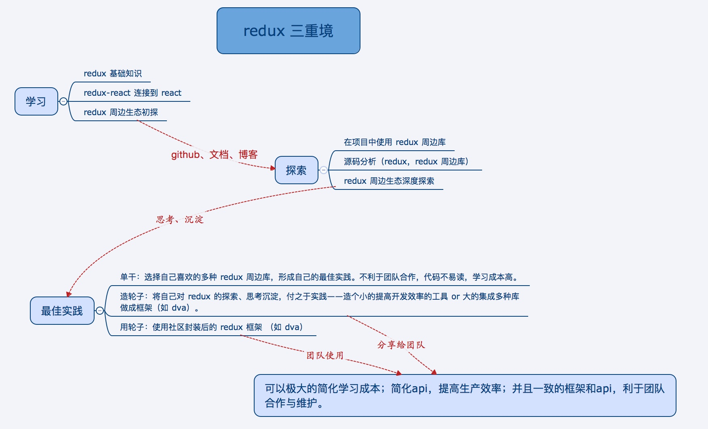

React + Redux 开发中的选型与优化
react和redux的思想是开放的，海纳百川，周边生态百花齐放，不同于vue，官方给出的最佳实践几乎是唯一的，而在react + redux开发中根据需求和喜好的不同，可以有不同的组合式选择，社区也有多种优秀实践方案。这里对react + redux开发中选型做一个总结，并探讨一下react + redux开发中的优化问题。
一、React和Redux开发选型
目前，React生态圈已十分成熟，Redux也已成为React开发中的主流框架，我们知道，Redux 是一个体小精悍的库，也衍生出了丰富的工具集和可扩展的生态系统。之前看了一篇文章redux 三重境，将redux分为三个境界：

这里就探索一下redux周边生态，Redux第三方库纷呈繁杂，都能针对redux开发中存在一些痛点进行针对性解决，例如：如何优雅的进行异步控制，如何避免重复冗余的actionCreator，如何避免state树细微局部变化而导致一些selector的重复计算等。在开发时，这些第三方库未必都会用到，也有一定学习成本，这里就对一些比较成熟流行的第三方库进行一个归纳总结，提供一个开发选型时的参考。
路由处理 react-router和react-router-redux
react-router是开发时采用的路由库，它通过管理 URL，实现组件的切换和状态的变化，开发复杂的应用几乎肯定会用到。目两位创始人闹翻了，其中一位另起门户，写了一个功能相同的 Reach router，这里就不详细介绍了。如果把react-router url的变化、参数等信息作为状态，交给redux的store管理，可以使用react-router-redux，一般场景下直接使用react-router即可，因为url的这些状态比较独立，不一定非要交给redux来管理的。
Redux异步控制 redux-thunk 和 redux-saga
在使用Redux进行React开发过程中，最常遇到的就是异步操作如何处理的问题。异步方案选型有好几种，有redux-thunk，redux-saga，redux-promise，redux-observable等，这里我们就讨论两种常用的redux-thunk和redux-saga。
我们知道，Redux可以被看作是Flux的一种实现，因此Redux中action对象是参照Flux标准Action（FSA）构造的。什么是FSA（Flux Standard Action）呢，可看如下代码，action需要是一个简单对象，每个key需要是’type’, ‘payload’, ‘error’, ‘meta’中的一个：
1 | export function isFSA(action) { |
官方文档里介绍了一种很朴素的异步控制中间件redux-thunk, 它的代码只有十几行：
1 | function createThunkMiddleware(extraArgument) { |
通过使用该中间件，action可以是函数，把dispatch、getState、extraArgument 作为参数传入这个函数里，实现异步控制。redux-thunk的使用很简单，但也有些问题，action的设计不符合FSA，还有action函数中的异步控制比较复杂，会产生好几个新的action，异步代码中可能到处都是dispatch(action)，不可控。
相比于redux-thunk，redux-saga就要难很多，同时也要优雅很多。官网介绍它是用来处理副作用的redux中间件，老外喜欢搞一些抽象性名词，副作用是什么，我们知道，reducer 都是纯函数，纯函数是指一个函数的返回结果只依赖于它的参数，并且在执行过程中不会对外部产生副作用，即给它传什么，就吐出什么。但是在实际的应用开发中，我们希望做一些异步的（如Ajax请求）且不纯粹的操作（如改变外部的状态），这些在函数式编程范式中被称为“副作用”。
Redux-Saga充分利用了ES6的Generator特性，一切异步调用都可以通过yield交给Redux-Saga去处理，并在异步代码执行完成后返回yield处继续执行，从此和回调形式的异步调用说再见，同时支持try/catch语法，可以更方便的对代码块进行异常捕获。看一个简单的示例代码：
1 | import { call, put, takeEvery, takeLatest } from 'redux-saga/effects' |
代码中创建一个 Saga 来监听所有的 USER_FETCH_REQUESTED action，并触发一个 API 调用获取用户数据。可以想像为，一个 saga 就像是应用程序中一个单独的线程，它独自负责处理副作用。
相比redux-thunk的优点：
- 集中处理了所有的异步操作，异步接口部分一目了然
- 流程拆分更细，用同步的方式写异步代码
- action是plain object，符合FSA
- 方便异步接口的测试
越是用来解决具体问题的技术，使用起来越容易，越高效，学习成本越低；越是用来解决宽泛问题的技术，使用起来越难，学习成本越高。不管是否用得上，你都应该尝试一下。
缩减样板代码redux-actions
Redux中一个约定俗成的做法是通过创建函数生成 action 对象，而不是在你 dispatch 的时候内联生成它们。当应用越来越大之后，写简单的 action creator 很容易让人厌烦，且往往最终生成多余的样板代码。一些工具库也可以帮助生成 action creator ，例如 redux-act 和 redux-actions 。这些库可以有效减少你的样板代码，并紧守例如 Flux Standard Action (FSA) 一类的标准。这里我们主要看看redux-actions，官网示例：
1 | import { createActions, handleActions, combineActions } from 'redux-actions'; |
redux-actions能减少reducer 和 action 中样板代码，能避免写太多action creator函数和reducer中的switch分支写法
提高 selector 的性能reselect
在使用redux进行react开发时，我们通常使用react-redux来将两者进行连接，react-redux中的核心方法connect作用就是选取redux store中需要的state与disaptch，交由connect去绑定react组件的props。指定store中的哪些 state 属性被注入到 component 的 props 中，这是通过所谓的 selector 函数完成的，我们注意到，selector是一个纯函数。有一个明显的性能问题是store中state的任何更新都会导致selector的重新计算，这其实是非常不合适的，reselect这个库就能采用缓存帮助省去没必要的重新计算。这也是一个非常简练的库，源代码100多行。看一个使用示例：
1 | import { createSelector } from 'reselect'; |
代码中selector便只会根据 state.todos 变化时重新计算，而不是整个state tree变化都计算。
不可变数据管理redux-immutable
在redux的架构中，reducer应该是纯函数，纯函数意味着不能突变（mutate）它的参数，意味着state的更新应该在“不可变（immutable）”的理念下完成。这就是说reducer总是返回一个新的更新后的对象，而不是直接修改原始的state tree。 Immutable.js 这样不可变的库被设计用于克服 JavaScript 中固有的不变性问题，redux中的state是JS对象，不少开发者会使用 Immutable.js等不可变的库将其由JS对象转化为immutable对象，这时就需要结合使用redux-immutable这样的库，类似的库还有redux-immutablejs。用法很简单，需将redux中的combineReducers方法改为使用redux-immutable中的：
1 | const StateRecord = Immutable.Record({ |
小结
其实还有很多redux生态圈的轮子没有提到，例如：
- redux-promise： redux中间件，用来处理promise
- redux-rx： 用于引入RxJS的响应式编程思想
“轮子永远是造不完的，也是看不完的，这么多轮子的取舍其实终究还是要看开发者的能力以及实际项目的需求，或许你根本不需要这些东西”。
二、react + redux开发中的优化
我们在刚接触react开发时，觉得就像官网说的那样，react就意味着组件化、高性能，我们只关注数据整体，至于两次数据之间UI如何变化，完全交给Diff算法去做，所以shouldComponentUpdate很少去写，反正能渲染出想要的结果就行。实际上Virtual DOM算法只是避免了没必要的真实 DOM 操作，所以 React 性能很好。但随着应用复杂度的提升， DOM 树越来越复杂，大量的对比操作也会影响性能。
PureComponent
React15.3 中新加了一个类PureComponent，它和 Component 基本一样，只不过会在 render 之前帮组件自动执行一次shallowEqual（浅比较），来决定是否更新组件，浅比较只会比较第一层。如下：
1 | function shallowEqual(objA, objB) { |
使用 PureComponent 相当于自动加上了 shouldComponentUpdate 函数：
1 | function shouldComponentUpdate(nextProps, nextState) { |
当组件更新时，如果组件的 props 和 state 浅比较都没发生改变， render 方法就不会触发。但如果 props 和 state 值没变，但引用变了，也同样会造成虚拟 DOM 计算的浪费，如果值改了，但引用没改，又会造成不渲染。因而需要很小心地操作数据，这时候就可以搭配Immutable.js进行数据操作。
Immutable.js
Immutable.js同样是 Facebook 出的持久性数据结构的库，用来创建和操作Immutable 数据对象。Immutable数据就是一旦创建，就不能更改的数据。每当对Immutable对象进行修改的时候，就会返回一个新的Immutable对象，以此来保证数据的不可变。关于Immutable.js的介绍和api可以看官网，至于Immutable 是如何使用结构共享来避免深拷贝把所有节点都复制一遍带来的性能损耗的可以看如下图：

通过下面代码可以看出，Immutable对象值不变时，仍然得到原对象，值变化时便是新对象，非常适合与PureComponent配合使用，用来减少组件的重复渲染，用以提高性能。1
2
3
4
5
6
7const { Map } = require('immutable')
const map1 = Map( {a: 1, b: 2, c: 3 })
const map2 = map1.set('b', 2)
assert.equal(map1, map2) // uses map1.equals
assert.strictEqual(map1, map2) // uses ===
const map3 = map1.set('b', 50)
assert.notEqual(map1, map3) // uses map1.equals
Immutable.js结合redux使用的话可以用前面提到的redux-immutable或者redux-immutablejs将整个state tree由js对象改造为Immutable对象。在redux中使用immutable需要注意的是：异步操作和服务器的交互当然采用的是JS原生对象，除此之外的其他位置，避免出现toJS()的转换代码，统一采用immutable 数据，也就是说接收到服务端的数据后，在流转入全局 state 之前，统一转化为 immutable 数据，因为toJS和fromJS这种转换操作会消耗大量的性能。
前面介绍的reselect同样可以优化应用性能，当把整个Redux状态树Immutable化以后，reselect就需要修改映射函数：
1 | const getTodos = (state) => {state.get('todos')} |
特别需要注意的是在选择器第二步处理函数内，如果涉及Immutable操作，也需要额外修改成Immutable对应方式。
小结
ImmutableJS 结合 PureComponent 可以很大程度的减少重复渲染，大量提高性能，并且提供了大量的类似原生 JS 的方法，完全函数式编程，也容易实现时间旅行，但也存在这样一些问题：
- ImmutableJS 库体积比较大
- 有学习成本
- 侵入性强，会渗透整个项目的代码